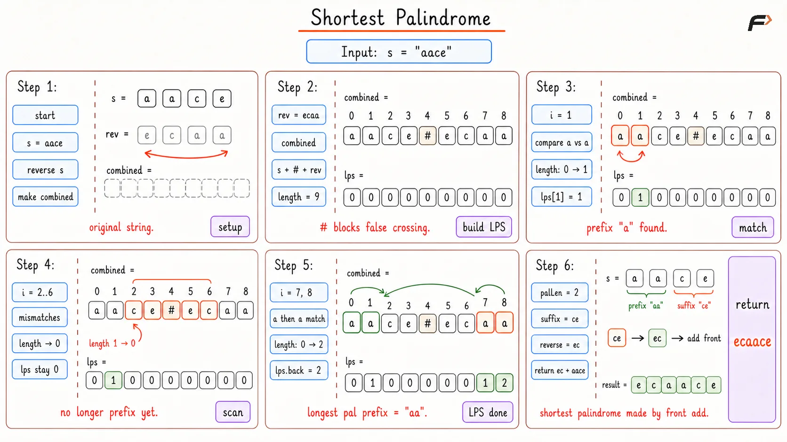

Shortest Palindrome
Given a string s, add characters in front of it so that the final string becomes a palindrome. Return the shortest palindrome that can be formed.
Example 1
Input: s = "aacecaaa"
Output: "aaacecaaa"
Explanation: The prefix "aacecaa" is already a palindrome.
Only the leftover suffix "a" is not part of that palindromic prefix. Reverse this suffix and add it in front.
So the answer becomes "a" + "aacecaaa" = "aaacecaaa".
Example 2
Input: s = "abcd"
Output: "dcbabcd"
Explanation: Only the first character "a" is a palindromic prefix.
The remaining suffix is "bcd". Reverse it to get "dcb" and add it in front.
So the answer becomes "dcb" + "abcd" = "dcbabcd".
Approach
Since characters can be added only in front, the original string s must stay at the end of the answer. That means the best possible answer depends on how much of the beginning of s is already useful.
For example: s = "aacecaaa" The prefix "aacecaa" is already a palindrome.
So there is no need to disturb this part. Only the leftover suffix "a" needs help. If the leftover suffix is reversed and placed in front, it mirrors the end of the string and completes the palindrome.
So the real goal is: Find the longest prefix of s that is already a palindrome.
If that longest palindromic prefix has length L, then: leftover suffix = s[L...n-1] answer = reverse(leftover suffix) + s
Now the question becomes: how can the longest palindromic prefix be found quickly? A prefix is palindromic if it matches its own reverse. So create:
combined = s + "#" + reverse(s)The separator "#" is placed between the two strings so that matches do not accidentally cross from s into reverse(s).
Now use the KMP LPS array on this combined string.
The last value of the LPS array tells the length of the longest prefix of combined that is also a suffix of combined. Because the combined string starts with s and ends with reverse(s), this value becomes the length of the longest prefix of s that matches a suffix of reverse(s).
That is exactly the longest palindromic prefix of s.
Once that length is known, the remaining suffix is reversed and added in front.
Algorithm
Reverse the original string. This helps compare the beginning of
swith the mirrored version of itself.Build
combined = s + "#" + reverse(s). The separator is needed so that the LPS calculation does not create a match by mixing characters across the boundary.Compute the LPS array for
combined. For every index,lps[i]stores the length of the longest proper prefix that is also a suffix ending at that index.Take the last value of the LPS array. This value gives the length of the longest palindromic prefix of
s, because it represents the largest match between the start ofsand the end ofreverse(s).Take the part of
safter this palindromic prefix. This suffix is the only part that is not already mirrored correctly.Reverse that suffix and add it in front of
s. This creates the shortest palindrome because only the unmatched part is added.
Dry Run

Shortest Palindromic Sequence Dry Run
Solution
#include <bits/stdc++.h>
using namespace std;
class Solution {
private:
/*
* Builds the LPS array used by KMP to store
* the longest prefix-suffix length at each index.
*/
vector<int> buildLPS(string pattern) {
int n = pattern.size();
// lps[i] stores the longest proper prefix
// that is also a suffix ending at index i.
vector<int> lps(n, 0);
// This stores the current matched prefix length.
int length = 0;
// Start from index 1 because lps[0] is always 0.
int i = 1;
while (i < n) {
// If characters match, the current prefix match
// can be extended by one character.
if (pattern[i] == pattern[length]) {
length++;
lps[i] = length;
i++;
}
// If there is a mismatch after some matched characters,
// fall back to the previous possible prefix length.
else if (length != 0) {
length = lps[length - 1];
}
// If there is no matched prefix left, this index
// cannot extend any prefix-suffix match.
else {
lps[i] = 0;
i++;
}
}
return lps;
}
public:
/*
* Returns the shortest palindrome that can be made
* by adding characters only in front of the string.
*/
string shortestPalindrome(string s) {
// An empty string or a single character
// is already a palindrome.
if (s.size() <= 1) {
return s;
}
// Reverse the string so the prefix of s
// can be matched with its mirrored form.
string reversed = s;
reverse(reversed.begin(), reversed.end());
// The separator prevents false matches
// from crossing between the two strings.
string combined = s + "#" + reversed;
vector<int> lps = buildLPS(combined);
// This is the length of the longest prefix
// of s that is already a palindrome.
int palindromicPrefixLength = lps.back();
// Only the suffix after the palindromic prefix
// must be mirrored and added in front.
string suffixToAdd = s.substr(palindromicPrefixLength);
reverse(suffixToAdd.begin(), suffixToAdd.end());
return suffixToAdd + s;
}
};
// Driver code starts
// Runs a hard-coded example to show the result.
int main() {
string s = "aacecaaa";
Solution sol;
cout << sol.shortestPalindrome(s) << endl;
return 0;
}Complexity Analysis
Time Complexity: O(n), where n is the length of the string. Reversing the string, building the combined string, computing the LPS array, and building the answer all take linear time.
Space Complexity: O(n), because the reversed string, combined string, and LPS array are stored.
Interview follow-up Questions
Because characters can be added only at the front. The part of the string that already forms a palindrome from the beginning can stay untouched. Only the remaining suffix needs to be mirrored and added before the string.